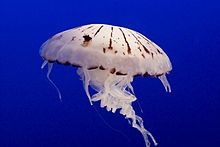

Did You Know
Jellyfish are the major non-polyp form of individuals of the phylum Cnidarian. They are typified as free-swimming marine animals consisting of a gelatinous umbrella-shaped bell and trailing tentacles. The bell can pulsate for locomotion, while stinging tentacles can be used to capture prey.
Jellyfish are found in every ocean, from the surface to the deep sea. A few jellyfish inhabit freshwater. Large, often colourful, jellyfish are common in coastal zones worldwide. Jellyfish have roamed the seas for at least 500 million years, and possibly 700 million years or more, making them the oldest multi-organ animal.